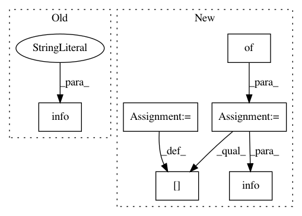

42c5df6f644493cf055d0b2e1a756c946d49c38f,perfzero/lib/setup.py,SetupRunner,setup,#SetupRunner#,46
Before Change
self.docker_file_path, self.docker_tag)
utils.run_commands([docker_build_cmd])
logging.info("Completed setup operation")
def _get_git_repos(self):
Return list of repos to checkout.
git_repos = []
After Change
device_utils.create_drive_from_devices(self.data_dir, devices)
// Check out git repos
site_package_info = {}
git_repos = self._get_git_repos()
for git_repo in git_repos:
dir_name = git_repo.get("dir_name")
local_path = os.path.join(self.site_packages_dir, dir_name)
utils.checkout_git_repo(
git_repo.get("url"),
local_path,
branch=git_repo.get("branch"),
git_hash=git_repo.get("git_hash"))
site_package_info[dir_name] = utils.get_git_repo_info(local_path)
// Download data
if self.config.gcs_downloads_str:
for gcs_download in self.config.gcs_downloads_str.split(","):
local_path = self.data_dir
if "" in gcs_download:
local_path = os.path.join(local_path, gcs_download.split("")[0])
gcs_download = gcs_download.split("")[1]
utils.download_from_gcs(gcs_download, local_path)
// Build docker image.
docker_build_cmd = "docker build --pull -f {} -t {} .".format(
self.docker_file_path, self.docker_tag)
utils.run_commands([docker_build_cmd])
// Write setup info to log file
setup_info = {}
setup_info["env_vars"] = self.config.get_env_vars()
setup_info["site_package_info"] = site_package_info
with open(os.path.join(self.workspace_dir, "setup_info.log"), "w") as f:
json.dump(setup_info, f)
logging.info("Setup operation completed with summary:\n %s",
json.dumps(setup_info, indent=2))
def _get_git_repos(self):
Return list of repos to checkout.
git_repos = []
In pattern: SUPERPATTERN
Frequency: 3
Non-data size: 6
Instances
Project Name: tensorflow/benchmarks
Commit Name: 42c5df6f644493cf055d0b2e1a756c946d49c38f
Time: 2019-02-06
Author: donglin@google.com
File Name: perfzero/lib/setup.py
Class Name: SetupRunner
Method Name: setup
Project Name: ray-project/ray
Commit Name: f31ee84bfdc6dc2325c8890412a965e509074d0a
Time: 2020-09-05
Author: wlx65005@gmail.com
File Name: streaming/python/runtime/transfer.py
Class Name: DataReader
Method Name: __init__
Project Name: ray-project/ray
Commit Name: 1b1466748f1db72835a594d73d502e9787e080a9
Time: 2020-09-04
Author: wlx65005@gmail.com
File Name: streaming/python/runtime/transfer.py
Class Name: DataReader
Method Name: __init__